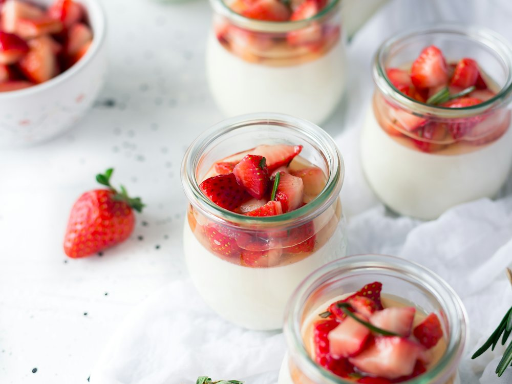

Paul
Кафе · Французская пекарня · Алматы
Рейтинг
★ 4.8
1 789 оценок
Год открытия
нет данных
в открытых источниках не нашли
Средний чек
≈2 500 ₸
оценка по типу заведения
Адрес и часы
📍 ТЦ Esentai Mall, пр. Аль-Фараби, 77/8, Алматы · Бостандыкский район
🕒 пн-вс 08:00-22:00
О заведении
Французская пекарня-кафе.
Меню
Рядом в справочнике
Paradise · Pasta & Pizza EXPRESS · Pasta La Vista · Paul · Paul · Paulaner Brauhaus Almaty